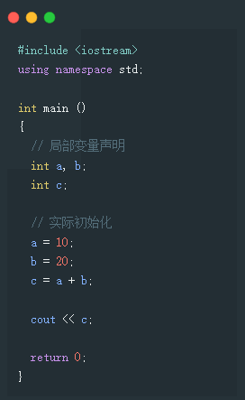
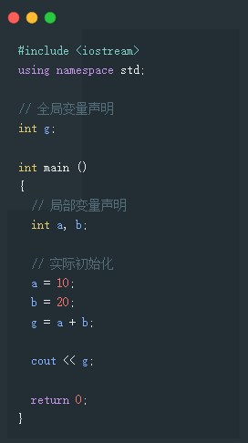
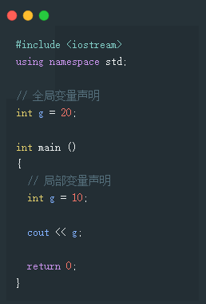
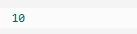
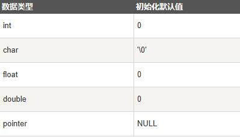

C++变量作用域
作用域是程序的一个区域，一般来说有三个地方可以定义变量：
在函数或一个代码块内部声明的变量，称为局部变量。
在函数参数的定义中声明的变量，称为形式参数。
在所有函数外部声明的变量，称为全局变量。
我们将在后续的章节中学习什么是函数和参数。本章我们先来讲解什么是局部变量和全局变量。
局部变量
在函数或一个代码块内部声明的变量，称为局部变量。它们只能被函数内部或者代码块内部的语句使用。下面的实例使用了局部变量：

全局变量
在所有函数外部定义的变量（通常是在程序的头部），称为全局变量。全局变量的值在程序的整个生命周期内都是有效的。
全局变量可以被任何函数访问。也就是说，全局变量一旦声明，在整个程序中都是可用的。下面的实例使用了全局变量和局部变量：

在程序中，局部变量和全局变量的名称可以相同，但是在函数内，局部变量的值会覆盖全局变量的值。下面是一个实例：

当上面的代码被编译和执行时，它会产生下列结果：

初始化局部变量和全局变量
当局部变量被定义时，系统不会对其初始化，您必须自行对其初始化。定义全局变量时，系统会自动初始化为下列值：

正确地初始化变量是一个良好的编程习惯，否则有时候程序可能会产生意想不到的结果。